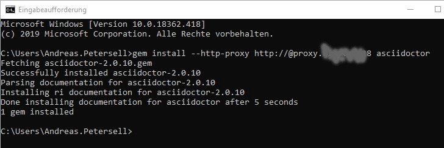
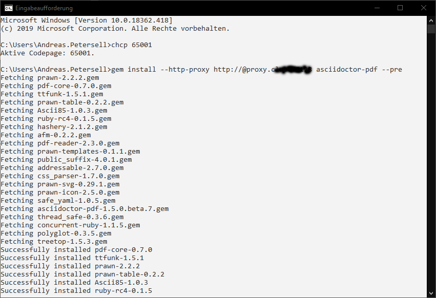

AsciiDoc ist eine vereinfachte Auszeichnungssprache ähnlich Markdown, die dazu dient, Texte in verschiedenen Dokumentenformaten zu veröffentlichen. Asciidoc wurde speziell für die Technische Dokumentation entwickelt und wird in vielen Git-Portalen als Dokumentationsstandard genutzt. Es hat jedoch nicht die Möglichkeiten der Wiederverwendung wie DITA-XML. Neuer Rechner, neuer Doktor: wie muss ich ihn installieren? Jetzt schreibe ich es auf, denn ich vergesse es jedes Mal.
Asciidoctor installieren
Öffnen Sie eine Eingabeauforderung und geben Sie folgenden Befehl ein und drücken Sie [Enter].
$ gem install --http-proxy http://@proxy.<Proxyservername>.<Port> asciidoctor

Arbeiten Sie ohne Proxyserver, genügt ein gem install asciidoctor.
Asciidoctor für PDF installieren
$ gem install --http-proxy http://@proxy.<Proxyservername>.<Port> asciidoctor-pdf --pre

Das war´s. Sie können nun mit Hilfe von adoc-Dateien Output erzeugen.
$ asciidoctor mysample.adoc